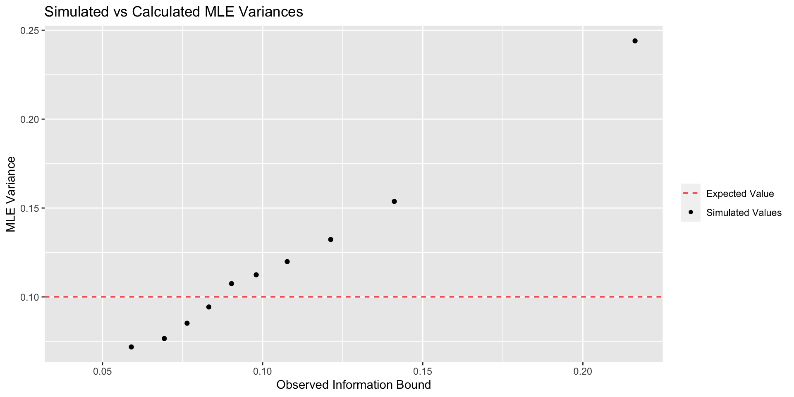

lcauchy <- function(theta, x){
sum(log(1 + (x - theta)^2))
}Introduction
The most challenging (and useful) work in statistics comes not from trying to estimate a value, but from estimating the accuracy of that value. The most famous example of this is that for a normally distributed variable \[\hat{\mu} \sim \mathcal{N}\left( \mu, \sigma^2/n\right)\] where \(\hat{\mu}\) is an estimate of \(\mu\) and \(n\) is the number of samples taken. The formula above is actually a generalization of \[\hat{\theta} \sim \mathcal{N}\left( \theta, 1/(n\mathcal{I}_\hat{\theta})\right)\] where \(\mathcal{I}_\hat{\theta}\) is the Fisher Information for the Normal Distribution. \(\hat{\theta}\) can represent more than one parameter to be estimated. In our specific example, \(\mathcal{I}_\hat{\theta} = 1/\sigma^2\). One important note about \(\mathcal{I}_\hat{\theta}\) is that it does not explicitly depend on the data being analyzed. As a result of this issue, Fisher proposed a slightly different statistic, called the Observed Fisher Information (\(I(x)\)) which depends on the data observed. \[ I\left(x\right) = -\ddot{l}_x(\hat{\theta}) = -\frac{\partial^2}{\partial \theta^2}l_x\left(\theta\right)\vert_{\hat\theta}\] where \(l_x\left(\theta \right)\) is the log-likelihood function for the distribution that the data is drawn from and is evaluated at the maximum likelihood estimator \(\hat\theta\). \(I(x)\) and \(\mathcal{I}_\hat{\theta}\) are related by the fact the \[E[I(x)] = n\mathcal{I}\] The section above was adapted from Chapter 4.3 in the excellent Computer Age Statistical Inference which explains maximum likelihood (ML) in the most accessible way I’ve seen. What follows next is a recreation of Figure 4.2 (pg 48) which illustrates the difference in the Conditional (Observed) Fisher Information and the Expected Fisher Information
Simulation Comparing Observed and Expected Fisher Information
Estimating \(\hat{\theta}\) using MLE
The example that follows is for the Cauchy distribution which follows the distribution \[f_\theta(x) = \frac{1}{\pi} \frac{1}{1+(x-\theta)^2}\] This is a form of the Cauchy distribution where the scale parameter equals 1. The likelihood equation is \[-log(f_\theta(x)) = -(log(\frac{1}{\pi}) + log(1) -log(1 + (x - \theta)^2))\] We can then drop all of the constant terms and our final equation for calculating the maximum likelihood is \[ l_x(\theta) = \sum_{i=1}^{n}{log(1 + (x_i - \theta)^2)}\] which is defined in R here:
We can then use the nlm function to find the MLE for \(\theta\). location in the code below is our true \(\theta\).
set.seed(1120)
cauchy_samp <- rcauchy(n = 20, location = 0, scale = 1)
mle_estimate <- nlm(lcauchy, p = median(cauchy_samp),
x = cauchy_samp)
round(mle_estimate$estimate,2)[1] 0.13Calculating Expected Fisher Information
The Expected Fisher Information can be shown to be \[\mathcal{I}_\hat{\theta} = \frac{1}{2}\] meaning the the variance of the estimate of \(\hat{\theta}\) is bound by variance of \[\frac{1}{n\mathcal{I}} = \frac{2}{n}\]. The full proof can be found in solution (i) here. Note that this does not depend on the data observed (only the number of point \(n\))
Calculating the Observed Fisher Information
The observed Fisher Information may be calculated based off its definitions above. For the Cauchy distribution \[ I(x) = -2\sum_{i=1}^{n}{\frac{(x_i-\hat\theta)^2-1}{1+(x_i-\hat\theta)^2)^2}}\] which is defined below in R:
obsInformCauchy <- function(theta, x){
sum((-2 * ((x - theta) ^ 2 - 1)) / (1 + (x - theta) ^ 2) ^ 2)
}This suggests that \(\hat{\theta}\) is bound by variance of \[\frac{1}{I(x)}\] As before please note that this does depend on the data collected.
Simulation comparing the three variances
The simulation below will create 10,000 samples of 20 from a Cauchy distribution.
varCauchy <- function(n) {
# Create a sample size n from cauchy distribution
cauchy_samp <- rcauchy(n)
# Compute the MLE of theta
mle_estimate <-
nlm(f = lcauchy,
p = median(cauchy_samp),
x = cauchy_samp)
theta_hat <- mle_estimate$estimate
# Calculate the Observed Fisher Information at the MLE of theta
fish <- obsInformCauchy(theta_hat, cauchy_samp)
# Return the MLE and Observed Fisher Information
c(t_h = theta_hat,
obs_fish = fish)
}
library(dplyr)
sims <- sapply(1:10000, function(x) varCauchy(20)) %>%
t %>%
as.data.frame
pander::pander(head(sims), style = 'rmarkdown')| t_h | obs_fish |
|---|---|
| -0.07252 | 8.568 |
| 0.07057 | 12.93 |
| -0.149 | 6.096 |
| -0.08777 | 9.966 |
| 0.1799 | 7.437 |
| 0.5064 | 11.2 |
We will then calculate the variance based off the observed fisher (column bound below). Finally, we will group the the variance into deciles group and calculate the actual variance from the MLE (var_mle).
df <- sims %>%
mutate(bound = 1/obs_fish,
group = cut(bound,
breaks = quantile(bound,
probs = seq(0,1,.1)),
ordered_result = T)) %>%
group_by(group) %>%
summarise(avg_bound = mean(bound),
var_mle = var(t_h))
pander::pander(df, style = 'rmarkdown')| group | avg_bound | var_mle |
|---|---|---|
| (0.0407,0.0652] | 0.059 | 0.07185 |
| (0.0652,0.0728] | 0.06929 | 0.07661 |
| (0.0728,0.0798] | 0.0764 | 0.0852 |
| (0.0798,0.0868] | 0.0832 | 0.09435 |
| (0.0868,0.094] | 0.09029 | 0.1075 |
| (0.094,0.102] | 0.09799 | 0.1125 |
| (0.102,0.114] | 0.1077 | 0.1199 |
| (0.114,0.129] | 0.1213 | 0.1323 |
| (0.129,0.157] | 0.1411 | 0.1537 |
| (0.157,1.15] | 0.2163 | 0.244 |
| NA | 0.0407 | NA |
We will then plot the average estimated variance avg_bound against the actual variance var_mle along with the variance given by the expected fisher information.
library(ggplot2)
p <- df %>%
ggplot(aes(x = avg_bound, y = var_mle, color = "Simulated Values")) +
geom_point() +
geom_hline(aes(yintercept = 0.1,
color = "Expected Value"),
linetype = 2,
show.legend = T)
The graph above clearly shows that the Observed Information Bound is much better at assessing MLE variability. It’s important to note that as \(n\) gets larger, this difference becomes less and less important. Nevertheless, this is a great argument for taking the actual data into account when computing things like confidence intervals.
Further Reading
- Computer Age Statistical Inference provided the initial reason for exploring this on page 48. Additionally, an older manuscript (1978!) from the same authors is available for free online. See the graph on page 460 of the pdf.
- Geyer, 2003 provided some much needed details on how to calculate the fisher information in R.
- A step by step proof on how to calculate the Expected Fisher Information (warning: it’s awful) can be found here in the solution to (i)